Kenneth B. Vernon Scientific Computing and Imaging Institute, University of Utah
Kelsey Carlston School of Business Administration, Gonzaga University
Weston C. McCool Department of Social Sciences, CalPoly
Kurt M. Wilson Department of Anthropology, Lawrence University
Brian F. Codding Environmental Studies and Geography, UCSB
Variations on the Patron-Client Model:
The marginal utility of inequality: A global examination across ethnographic societies
Human Nature 31 (2020)
The origins of inequality: Insiders, outsiders, elites, and commoners
Journal of Political Economy 121(3) (2013)
The circular economy…
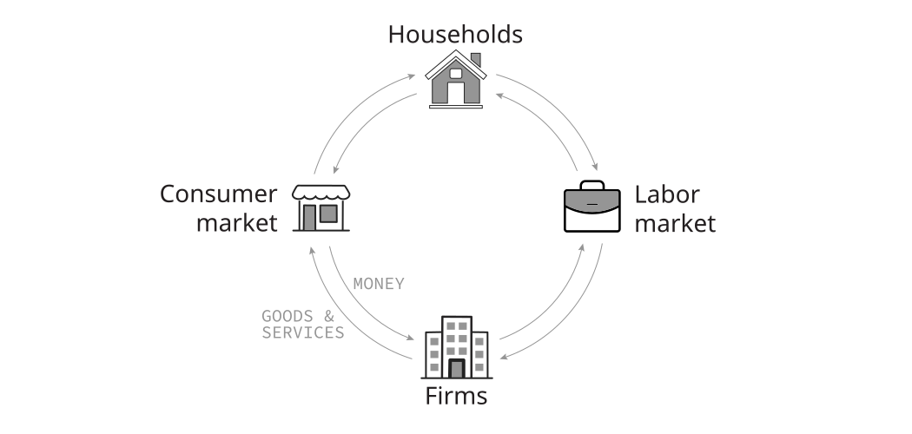
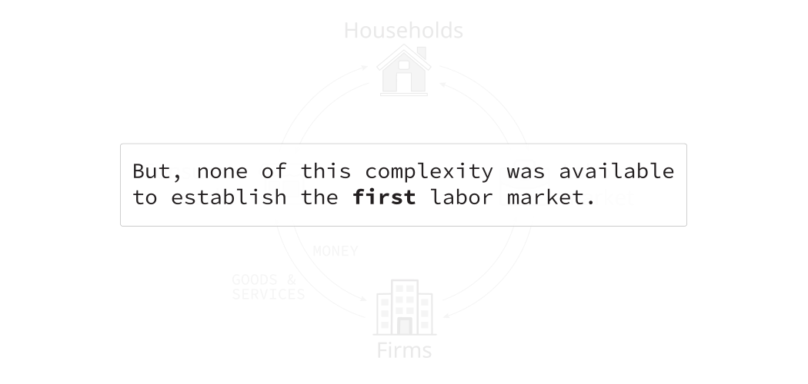
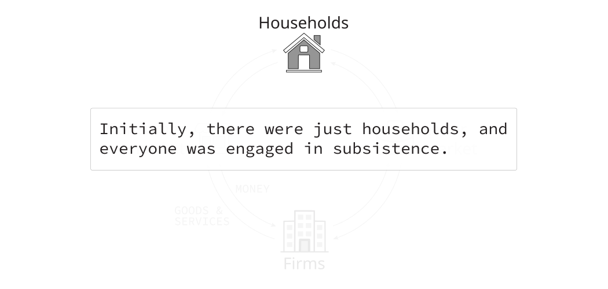
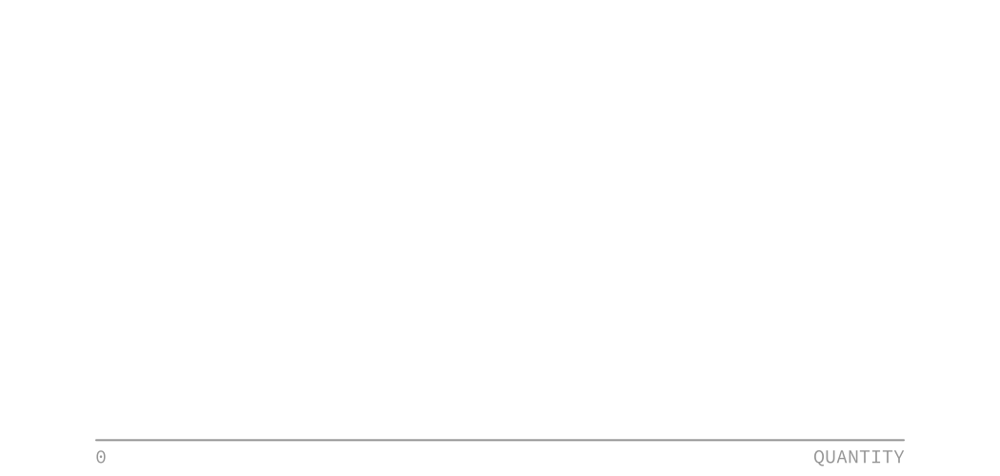
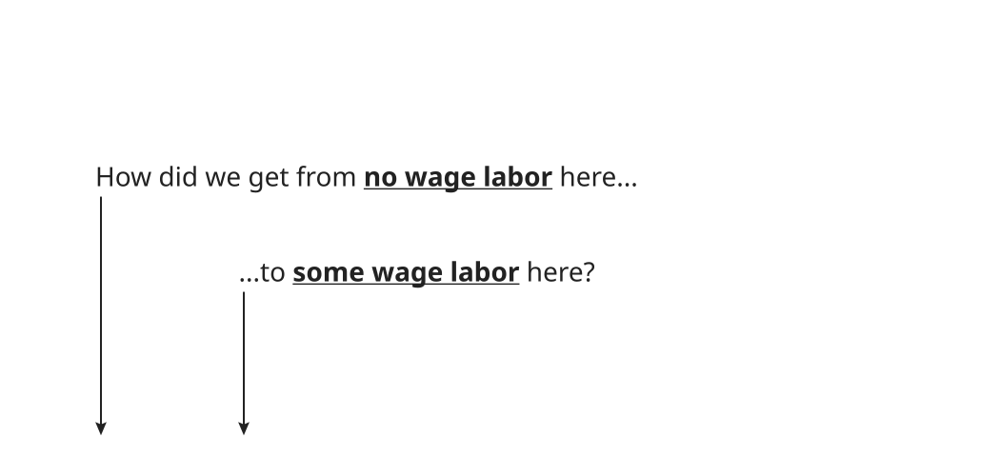
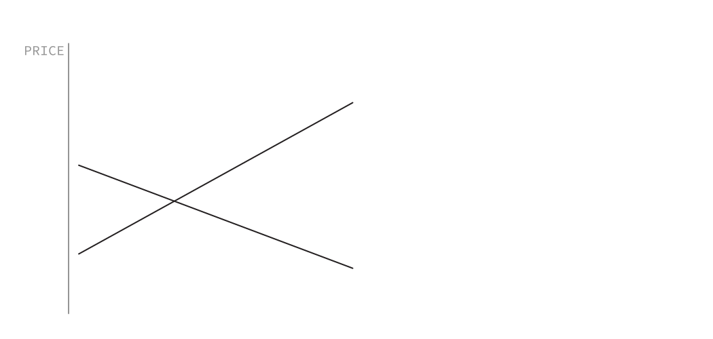
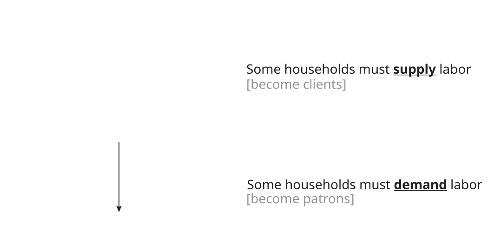
We need to…
To that end, we will develop a formal equilibrium model,
i.e., we will apply neoclassical orthodoxy. [cue Wilhelm scream]
We assume an agrarian subsistence economy in which…
The energetic output of an individual farm is given by…
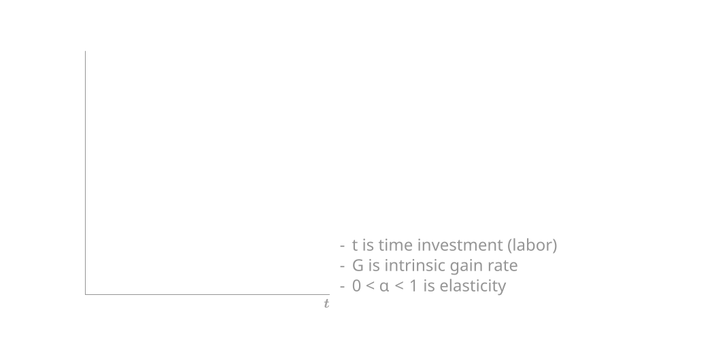
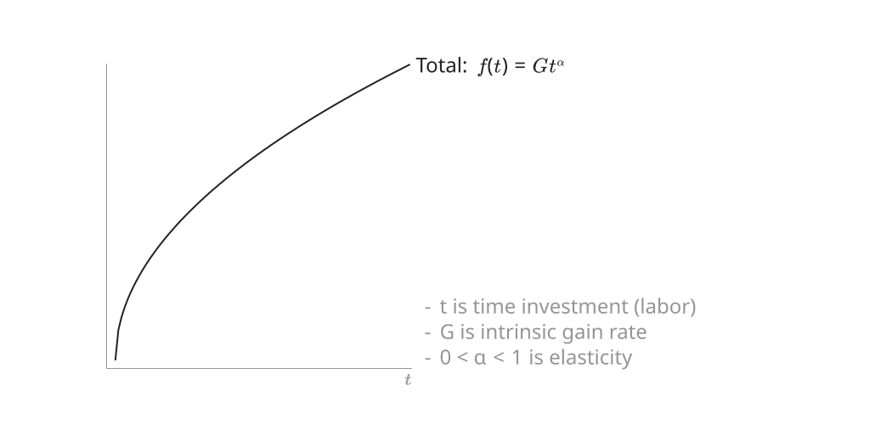
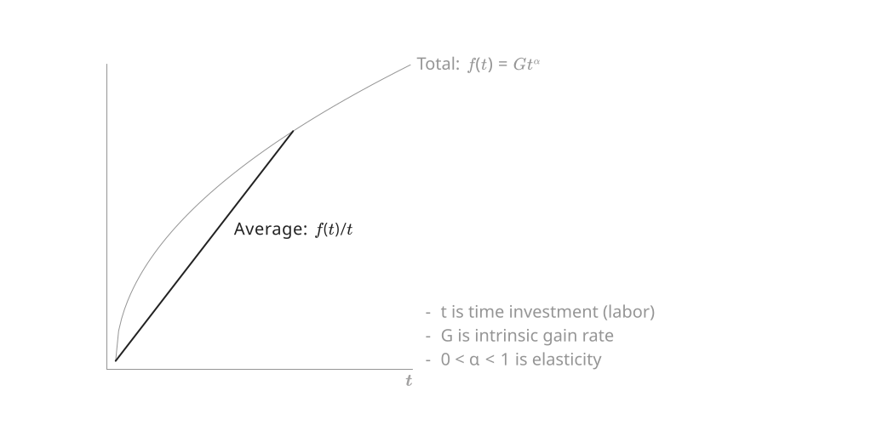
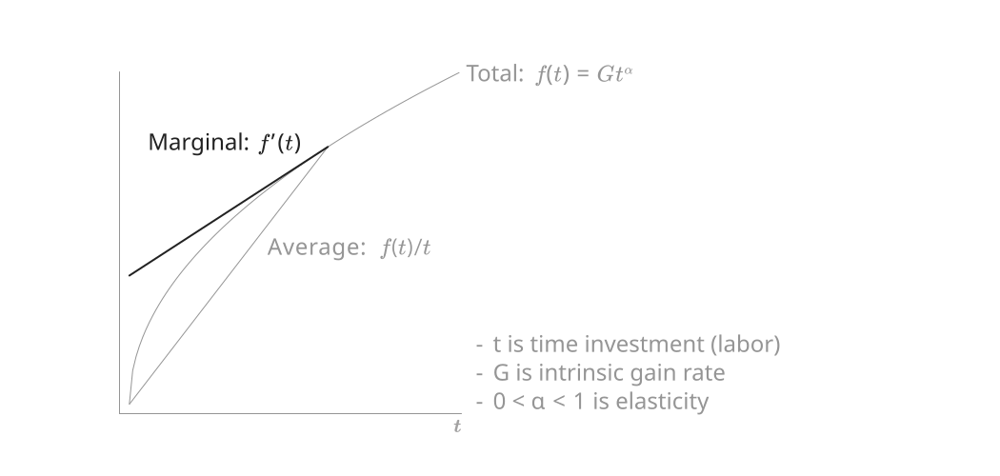
We assign to each farm a time budget, T, and assume that they are utility maximizers:
| Clients: | \max U_{c} = f(T-L) + wL \quad\;\; \text{s.t.}\;\; L \leq T |
| Patrons: | \max U_{p} = f(T+L) - wL |
where w is the market wage and L is time invested in wage-labor.
| Clients: | \max U_{c} = f(T-L) + wL \quad\;\; \text{s.t.}\;\; L \leq T |
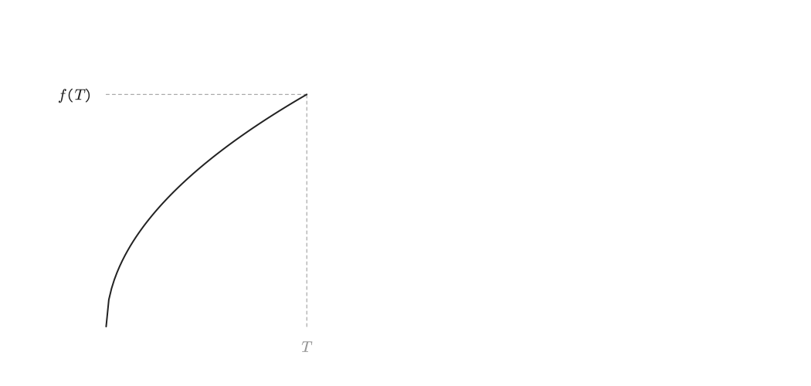
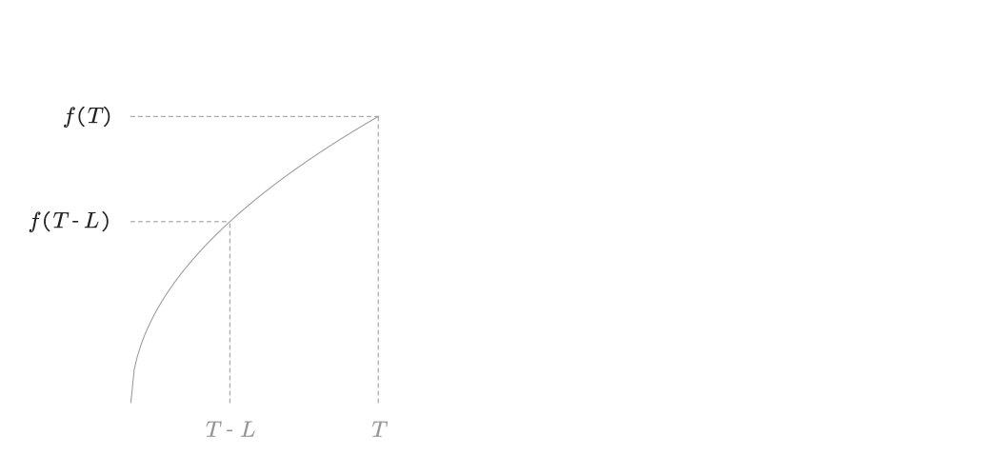
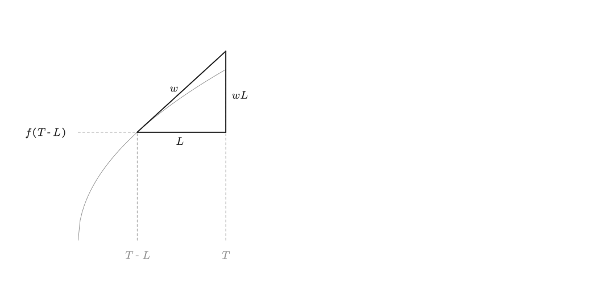
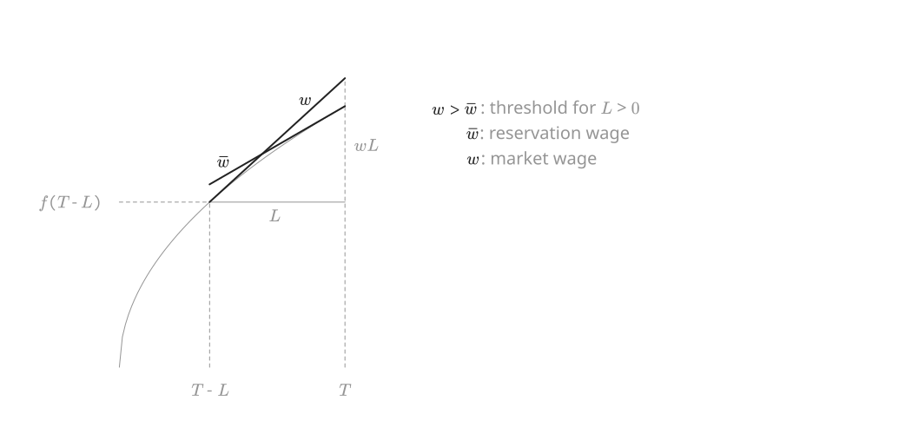
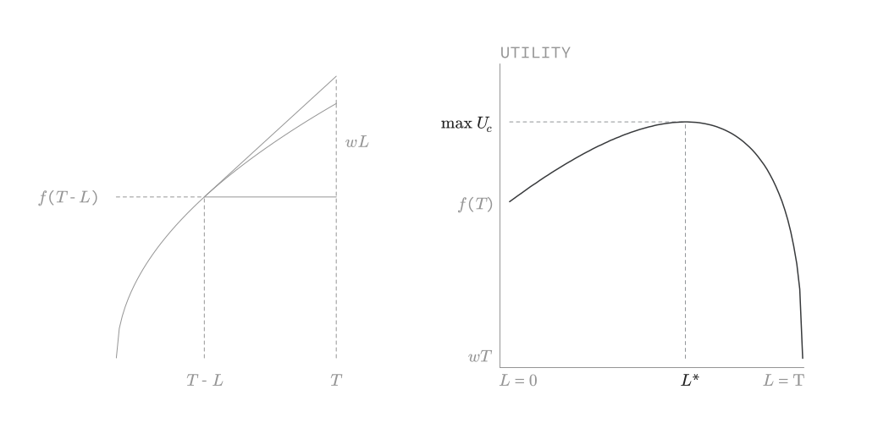
Total supply S(w) is sum of L^* for all client farms.
| Patrons: | \max U_{p} = f(T+L) - wL |
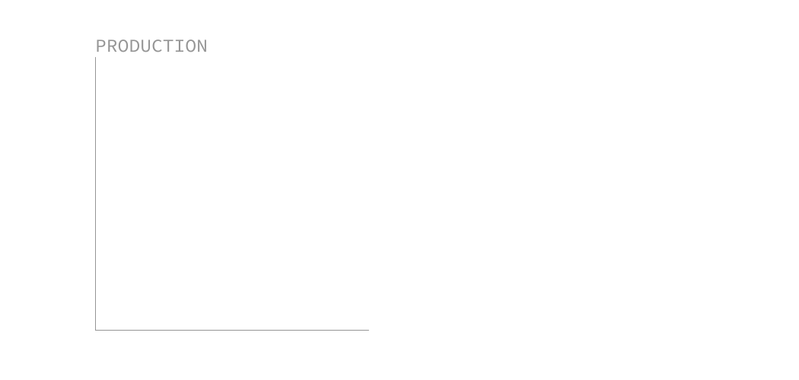
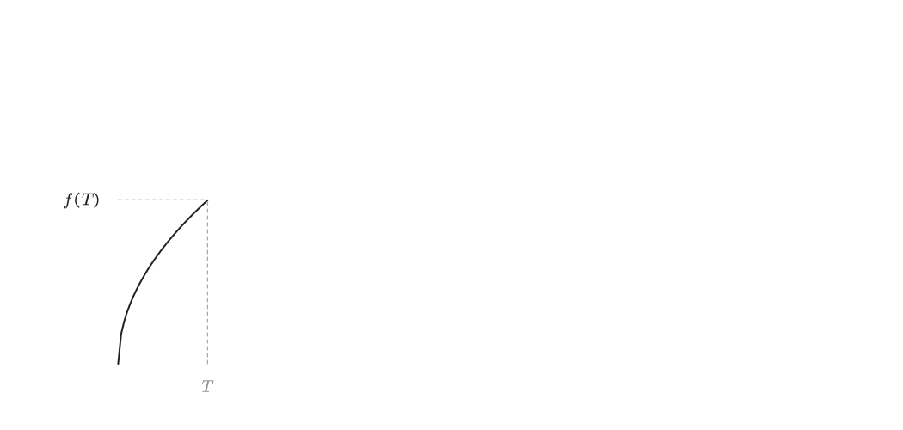
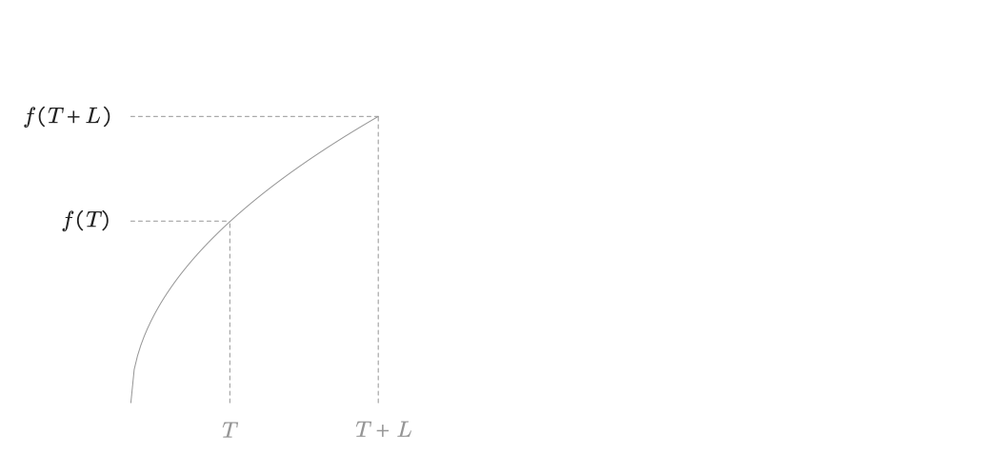
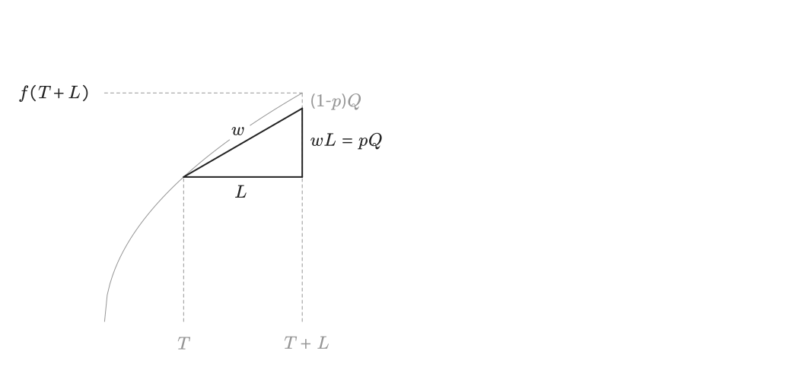
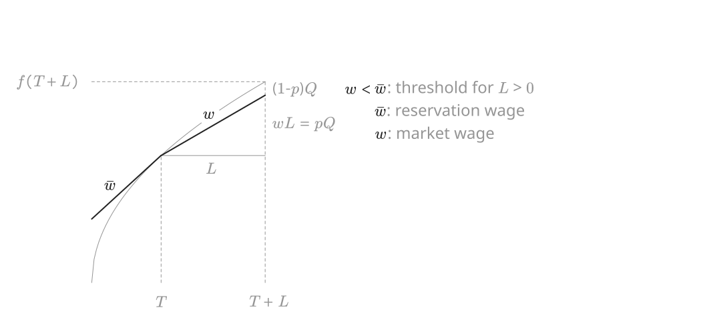
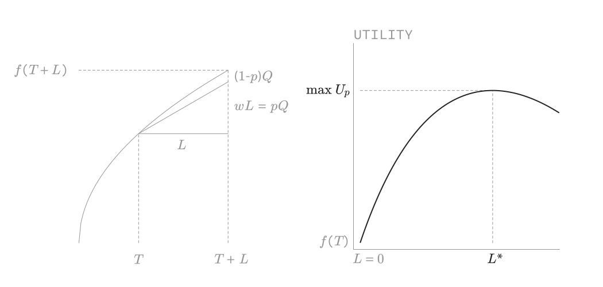
Total demand D(w) is sum of L^* for all patron farms.